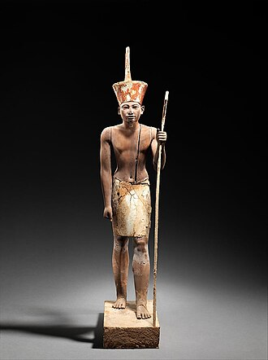
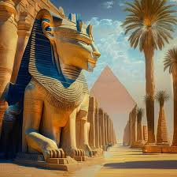
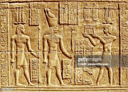
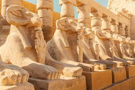
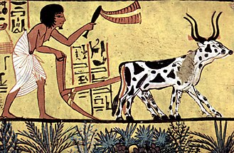

Ancient Egypt
Ancient Egypt was a civilization of ancient Northeast Africa. It was concentrated along the lower reaches of the Nile River, situated within the contemporary territory of modern-day Egypt.The history of ancient Egypt unfolded as a series of stable kingdoms interspersed by periods of relative instability known as "Intermediate Periods". The various kingdoms fall into one of three categories: the Old Kingdom of the Early Bronze Age, the Middle Kingdom of the Middle Bronze Age, or the New Kingdom of the Late Bronze Age.
Government and economy
The pharaoh was the absolute monarch of the country and, at least in theory, wielded complete control of the land and its resources. The king was the supreme military commander and head of the government, who relied on a bureaucracy of officials to manage his affairs. In charge of the administration was his second in command, the vizier, who acted as the king's representative and coordinated land surveys, the treasury, building projects, the legal system, and the archives.Much of the economy was centrally organized and strictly controlled.


History
The Nile has been the lifeline of its region for much of human history. The fertile floodplain of the Nile gave humans the opportunity to develop a settled agricultural economy and a more sophisticated, centralized society that became a cornerstone in the history of human civilization. Nomadic modern human hunter-gatherers began living in the Nile valley through the end of the Middle Pleistocene some 120,000 years ago. By the late Paleolithic period, the arid climate of Northern Africa had become increasingly hot and dry, forcing the populations of the area to concentrate along the river region.
Predynastic period
In Predynastic and Early Dynastic times, the Egyptian climate was much less arid than it is today. Large regions of Egypt were covered in treed savanna and traversed by herds of grazing ungulates. Foliage and fauna were far more prolific in all environs, and the Nile region supported large populations of waterfowl. Small tribes living in the Nile valley had developed into a series of cultures demonstrating firm control of agriculture and animal husbandry, and identifiable by their pottery and personal items, such as combs, bracelets, and beads. The largest of these early cultures in upper Egypt.


Old Kingdom (2686–2181 BC)
Major advances in architecture, art, and technology were made during the Old Kingdom, fueled by the increased agricultural productivity and resulting population, made possible by a well-developed central administration.[27] Some of ancient Egypt's crowning achievements, the Giza pyramids and Great Sphinx, were constructed during the Old Kingdom.
Middle Kingdom(2134–1690 BC)
The kings of the Middle Kingdom restored the country's stability and prosperity, thereby stimulating a resurgence of art, literature, and monumental building projects.[37] Mentuhotep II and his Eleventh Dynasty successors ruled from Thebes, but the vizier Amenemhat I, upon assuming the kingship at the beginning of the Twelfth Dynasty around 1985 BC.
